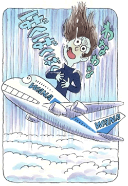

パニック障害2
心身共に鍛えられた森田療法の教え
（頻尿恐怖、パニック発作、他）
村上 由美子（仮名）28歳・会社員
無口な子というレッテル
私は、昭和五十二年、九州に生まれました。子供の頃から、人見知りで泣き虫な反面、とても勝ち気なところがあったと思います。小学生の時に、あるきっかけで、あの子は全く喋らない子、というレッテルが常につきまとうようになり、そのまま、学校では授業中しか声を出さなくなっていきました。この状況を何とか抜け出したかったのですが、周りの思惑と外れた事をするのが怖くて、なかなか出来ませんでした。それでも、家に帰れば仲の良い近所の友達と集まって、思う存分好きなことをして遊んでいました。その頃の楽しかった思い出が、大人になっても忘れられず、その記憶を糧に、それを目標に生きてきたと思います。
やがて中学にあがり、友達と会う機会も少なくなると、自分を社会と繋いでいたものがなくなってしまいました。学校で喋らない自分は動く権利がないと、体育や家庭の授業など、自分の動作を規制するようになりました。中学、高校時代はお昼も食べず、一日中机に座りただ心の軌跡を綴るのでした。机に教科書を出す行為すら恥ずかしく、トイレにも一切いかない、通学のバスも乗らず歩いて帰っていました。私は自分の意思も言わなかった為に、なぜ人と同じ行動をとらないのかと、先生や両親を相当困らせました。しかし身内の前では、以前のように明るい自分のまま接していたので、そのギャップに悩みました。
初めての体の異変
幼少より体だけは丈夫でしたが、ある時を境に頻尿恐怖が始まりました。普段、人前では殆ど動かなかった私が、学校の全体集合の時トイレに駆け込んでしまったのです。それはあまりに衝撃的な出来事でした。人前で初めて自分のコントロールを失い態度を崩したことに、ショックを受けました。数分おきに尿意が頭によぎるだけで直ぐさまトイレに行かないと気が狂うような心と体の状態になり、授業に出ていられませんでした。病院で検査しても異常なし。誰にも言わず、自分の気の持ち方で治せるものと信じていました。
やがて、中部地方の工場に就職進学が決まりました。これからは明るく、前向きに生きようと決意して、会社に赴任しました。しかし、初めての寮生活、仕事など何もかもが思い描いていたものとは違い、同室の人、先輩、同僚ともうまく接することが出来ません。そのうち誰とも話す機会がなくなり、声が殆ど出せなくなっていきました。声帯の検査を受けても異常なし。私は言葉よりも、話の内容よりも、皆の様にはっきりと声が出せれば何でも出来ると、ずっとそう思い込んでいました。
パニック発作の苦しみ

会社を二年ほどで退職し、今度こそ人生一からやり直そうと、大阪で一人暮らしを始めました。職場では初めは明るく振る舞っても、しばらくすると全く無口になってしまい、アルバイトを転々として生活していました。経済的にも、精神的にも不安定な暮らしでした。そんな中で二十歳の時、帰省の飛行機で初めてパニック発作を起こしました。飛行機の離陸する際に感じる背中と胸の異常な圧迫感、閉所恐怖や頻尿恐怖も相成って、動悸が激しくなり、着陸するまでの激しい緊張感の中、ただ一秒ごと生きるか死ぬかと戦かっていました。それと飛行機は空を飛んでいるから、自分の足が常に地に着いていないということも恐ろしく感じ、ジェットコースターに乗っているかのような緊張が続きました。その時は、心臓が弱いんだなと解釈していました。しかしそれ以降も、普段突然そのような状態に陥るようなことがあり、やがてTVでパニック障害という言葉を知りました。それからもその発作は起こるようになり、その頃、『森田式精神健康法』という本で森田療法を知りました。もう死んでも良いや、と本気で思うと発作が消えていく。そのやり方で発作をやり過ごしていました。その頃の私なりの「あるがまま」でした。
それから数年後、体調不良で不眠が続いていたある晩、突然、息がまったく出来なくなり、パニックになって、救急車に助けを求めました。対人恐怖など、経験のなさなど何処かへ吹き飛んでいました。救急隊員に対して吃る、吃らないなど問題ではなくなっていました。呼吸困難の苦しさに加え、体を動かそうにも卒倒感が強すぎて体がガタガタ痙攣し、手足は冷たく痺れ、意識が遠ざかります。過呼吸だと診断されましたが、自力で起きあがれず数時間そんな状態で、私は何かとても重い病気になってしまったのだと思いました。
悩みを打ち明けて
その後、職場の上司に初めて悩みのすべてを打ち明けました。それは、他人に初めて心を開いた体験でした。精神科へ通いながら、薬で日常生活は維持できるようになりました。そして縋るように、森田療法の会の扉を叩きました。財団の方とお話しする機会に恵まれ、『心の問題だからといって頭だけで解決しようとしてもダメですよ。弱い心を支える強い身体をつくっていきなさいね。』とのアドバイスを頂きました。それからは、通勤を毎日歩いて帰るようになりました。不安ながらも歩いていると、街並みや自然の中に色んな発見があり、気持ちがほぐれていきます。これまで四季の変化も知らず過ごしていたのです。体力もつき、一日中動き回れる身体になりました。過呼吸も起こらなっていきました。
森田療法とロードレース
やがて先輩が活動するロードレースの同好会に参加するようになって、運動量の激しいロードレースに挑戦するようになっていきました。大阪から京都嵐山まで、百キロ近い道程を走破出来るまでになりました。京都の美山という深い山の中で先輩達と一緒に走った感動は一生忘れることは出来ないでしょう。
その後、会の人たちの助けを借り、半年間服用していた安定剤を断つことに成功しました。どんなに辛くても愚痴をいわない、倒れそうでも踏みとどまって仕事をするなど、教えられたことを必死で実践しました。薬を止めた当初は、やはり辛くて辛くて、身も心も病気としか思えません。私は森田療法を信じ、襲ってくる異常感のままに、仕事に精を出しました。事実は、仕事がちゃんと出来ていたのです。今となれば、あの苦しみは一体何だったのかと不思議な、夢のような気分です。神経症はやはり病気ではありません。これまでの、人間性に対する誤った対処が症状に現れていたのだと、実感出来ました。薬の服用を止められたことは、森田療法の教えと、そして先輩の言われた身体作りのお陰でした。
それからの私の生活は、目まぐるしく忙しくなり、家族にもきつく当たることが多くなっていました。しかしそれは思い込みで、喜怒哀楽を素直にぶつけてくることをむしろ喜んでくれていました。これからは、過去は問わずに前向きに生活して生きていきたいです。悩みで何も進まなかった以前の自分の人生を思い出し、何かのきっかけで、出会いで、立ち止まっている人に希望を持って頂けたらと思います。